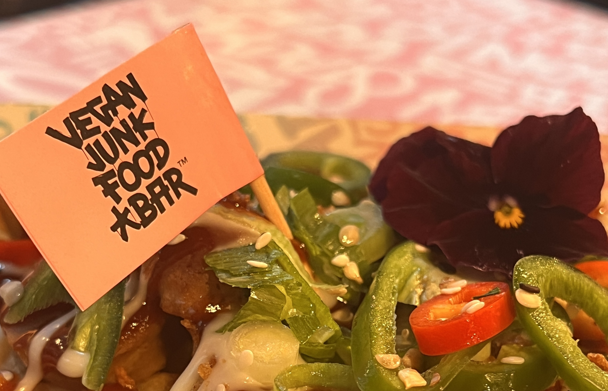
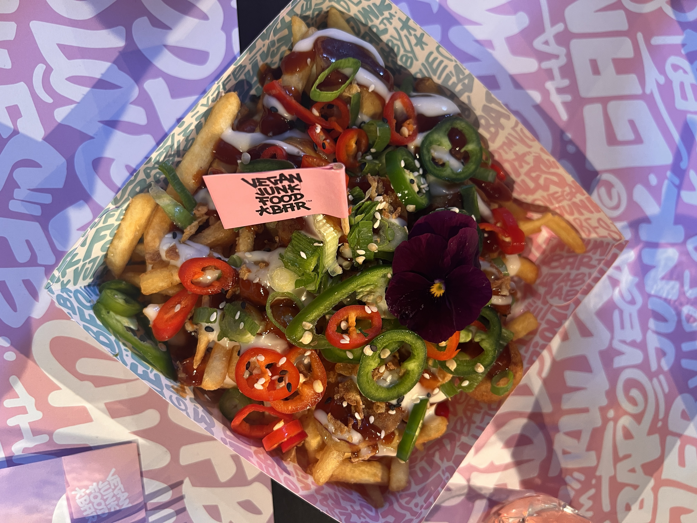
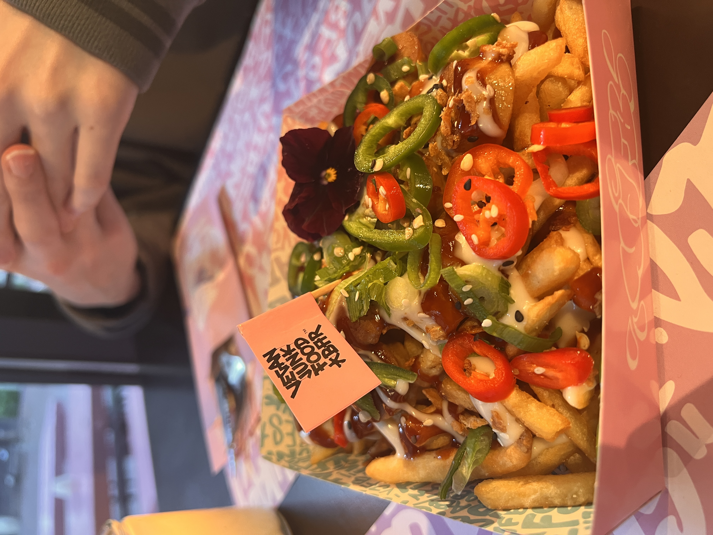

Review
Vegan Junk Food Bar
Afgelopen week ben ik naar de Vegan Junk Food Bar geweest. Een restaurant dat bekend staat om hun extravagnte vegetarisch gerechten.
Feel
Roze!!! Is het eerste dat ik dacht toen ik naar binnen liep. Het decor heeft veel roze en ik is op sommige plekken bedekt met graffiti. Dit was de locatie op de Regulierdwarsstraat.
VJFB
De huistijl van de Vegan Junk Food Bar komt goed terug in hun interieur. Street vibe met veek graffiti en de kleuren natuurlijk.
Eten
Ik kwam hier eten voor lunch dus ik had maar één gerecht genomen, de VJFBrädwurst een kapsalon met French fries, fresh red chillies, jalapenos, VJFBBQ sauce & Garlic sauce
Dragonfruit Ice-T..
Rating
Ik geef de Vegan Junk Food bar 3,5 ster.
De bradwurst kapsalon had een mooie presentatie en was kwa smaak oke. Er zat erg veel saus op wat ik persoonlijk niet zo lekker vind. De vleesvervanger in de kapsalon smaakte al
Ook duurde het best wel lang voordat het eten kwam en toen het er eindelijk was, was het ook nog lauw..